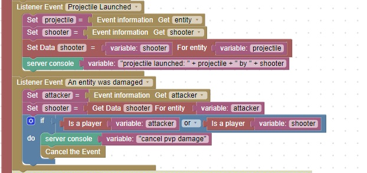

Cancel Player Damage
In some games, Player Versus Player damage is not allowed
The following code will cancel damage from another player

To test this code, give yourself some arrows and a bow and shoot them into the air.
When they hit you, you are doing damage to yourself.
Since you are a player, the damage event should be cancelled.
View the server console, you should see a message: cancel pvp damage
This means that your code is behaving properly.